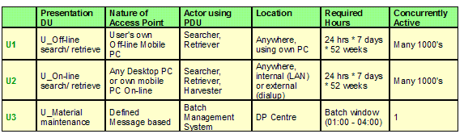
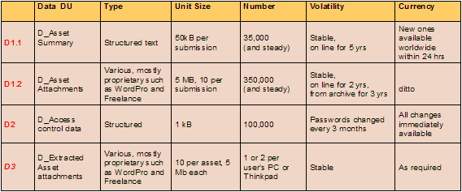
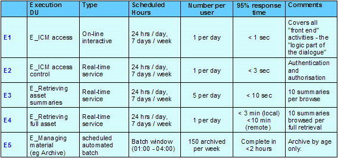

Each component may be associated with multiple Deployment Units, one for each of the DU types (PDU, DDU, EDU IDU) each
representing different aspects of the component’s non functional requirements.
A Deployment Unit associates or references additional information with these different aspects of the components (e.g.,
resource requirements, service level requirements, and technical dependencies) that is either relevant or related to
their placement.
As the definition of the solution’s application level Deployment Units evolves throughout a project, it is common for
different DUs to be at different levels of accuracy, precision and detail, and the technique should be applied flexibly
to reflect this.
Although any component’s aspects can be represented by DUs, it is common – and helpful – to distinguish between those
associated with the target application, and those that relate to the underlying technical components. In general,
therefore:
-
The DU Specification artifact usually only describes DUs associated with “application”, even after the component
model has been developed in order to describe how technical components will be used to support the application
level Component Model, or after the operational model has incorporated technical components (and therefore
technical DUs) into its nodes.
-
DU Specification artifacts associated with the underlying technical components are rarely created
This reflects the usual case that IT Architects can usually cater for the specification of technical services and
their product implementations in both the Component Model (if necessary) and the Operational Model without the need
for the formal DU linkage between them.
However, great care must be taken whenever these technical services are implemented in technologies new to the IT
Architect, or are being developed within the project. In these cases, it is strongly advised that these technical
components are treated in the same manner as application level components, with a detailed technical component model
and associated coverage in a DU Specification artifact. In these cases, it may even be appropriate to develop
several technical Component Model and DU Specification artifacts, each related to a particular technology being used in
the IT system.
During the development of each DU Specification the following guidance will assist with each of the tasks identified in
the Deployment Unit Task artifact.
Identify Candidate Deployment Units
During this step it may be helpful to focus on the CM’s relationship diagram, since this provides the most direct link
to the placement activities on the Operational Model (OM) relationship diagram. Also, consider the following when
assessing the need for each type of DU:
-
Presentation DUs (PDUs): Each component that is responsible for supporting the link to each user or external
IT system will have one or more presentation aspects and therefore require one or more PDUs. While identifying
these PDUs, it may also be helpful to refer to the System Context Diagram, which defines the systems relationship
with all users and external IT Systems.
-
Execution DUs (EDUs): In a conventional IT system, all application level components will have an execution
aspect, and therefore will require an EDU. However, it may be that you can immediately (and implicitly)
identify different characteristics for some parts of a component’s execution – in which case it may be appropriate
to define several EDUs for this aspect of that component.
-
Data DUs (DDUs): Many (although often not all) components have responsibility for business oriented
data. Each of these will be represented by at least one DDU. However, as with a component’s EDU, it is
possible that you can immediately identify different characteristics for some parts of a component’s data – in
which case it may be appropriate to define several DDUs for this aspect of that component.
-
As you are working through this step, think about whether you want to identify names for the DUs – or whether you
simply want to identify their existence. Although names are important, it may be best to wait until a little
later in the technique, when more is known about the DUs, before naming them in a way that reflects their
purpose.
Identify DU Characteristics
It is almost always vital to explicitly identify each DU’s service level characteristics (SLCs). The detail
behind each of these SLCs will depend on the type of DU being described but, in general, it is helpful to document:
-
“Numbers”. How big, how often, or how fast?
-
Volatility. How often does the DU or one of its attributes change?
-
Security. What levels of access control does the DU require?
-
Availability. How available does the DU need to be – both in terms of scheduled availability and unscheduled
unavailability? And in the event of a problem, what levels of degraded service will be acceptable for the DU?
The detail behind each of these categories depends on the type of DU in question. So, for each type of DU in
turn, establish the NFRs for each DU defined in step 1. As you work, be particularly aware of the potential for:
-
The separation or splitting of a component’s aspect into two or more parts . For example:
-
-
It may be that the same component will be responsible for more than one system’s interface, such as a
system that needs to provide the same services to the same user, but via a hand held terminal as well as a
workstation. In this case, it may be helpful to separate these two sets of system’s interface
(presentation related) NFRs into separate PDUs.
-
It may be that some functions available from a component are resource intensive, while others generate a
lighter load. In this case, it may be helpful to separate these two parts into separate EDUs.
-
It may be that some parts of a component’s data aspect are very large, but quite stable, while other parts
are very volatile, but small. In this case, it may be helpful to separate these two parts into
separate DDUs
-
The aggregation or grouping of one aspect for two or more components, if it is clear at this point that this aspect
can always be treated as one thing operationally. Each aspect is aggregated independently, so that, for
example:
-
-
If the system interface presented to a user or external system by a number of components is subject to the
same NFR's then this aspect of the involved components can be grouped into one PDU.
-
The execution of a component may be grouped into an EDU with a different set of components to that with
which its EDU is aggregated.
-
The large, stable parts of a component’s data aspect are grouped into a DDU with similar data aspects of
other components, while its small, volatile data parts are handled in a separate DDU.
In all cases, it may be that you don’t yet have quantitative information, and you may therefore be making qualitative
judgments or assumptions. As the project proceeds, so the metrics on the associated components should become more
firmly established and you can therefore document quantitative information for each DU.
Presentation Deployment Units
Presentation DUs represent the non-functional requirements of the interactions between the external interface (as used
by users or other external IT systems) and the application component.
Remember these NFRs are associated with the PDU, not the device supporting the PDU. It is likely that a device
will need to support multiple PDUs, in which case its presentational requirements will be determined by the entirety of
those of the supported PDUs.
It can sometimes be difficult to establish that the target system actually has an interface with an external system,
when it appears at first glance to be with a real person. The key is to understand the system boundary, from both
an application and infrastructure perspective. For example, consider a “home shopping” system, which must
provide:
-
An on-line service to private customers. At first glance, you may feel the PDU represents the interface with
the private customer him or herself.
Actually, the system boundary will probably be where the HTML/HTTP messages leave/enter the Internet from the target
system and, therefore, this requires a PDU to an external system.
-
An “off-line” service to corporate customers, who interact directly with a locally running “home-shopping”
application provided by the retailer.
In this case, the PDU represents the interface between the user and the component(s) running on the corporate
customer’s PC – i.e. an interface to a real user, but only at the application level.
-
A “call centre” based service, in which Call Centre Representatives (CSRs) interact with the home shopping
application on their workstation, while dealing with customers on the telephone.
In this case, the PDU represents the NFRs of the interface between the CSR and the component(s) running on their
workstation – i.e. an interface to a real user, but at both the application and systems software / hardware levels.
Human Users
For human users, these non-functional requirements will probably include:
-
The geographic location of the user interface, plus the number of users per location, plus how many locations there
are (i.e. how many instances of this PDU will the system have to support?)
-
The required scheduled availability, and permitted levels of unscheduled outages (for the interface as a whole)
-
The levels of access control (authentication) required
-
The level of IT skill the user has, as well as the level required by the new system
-
The availability (or otherwise) of systems management expertise locally available (either in the user or available
to the user)
-
Whether the user uses the system from a fixed location from a specific device, or whether they are mobile
(either using a specific or any device of the same type)
-
The nature and “form factor” of the device needed by the user – for example, is it is PC or PC-like interface, a
PDA, Hand held Terminal (HHT), phone, or a specialized device such as a till .
And don’t forget that a printer or other “output only” device such as a display screen is also an external interface
used by human users!
-
The need for any “specialized” input/output mechanisms, such as authentication devices, audio/visual outputs,
or bulk printing.
External Systems
For external IT Systems, these requirements will probably include.
-
The geographic location of the external IT system, plus the number of systems per location, plus how many locations
there are (i.e. how many instances of this PDU will the system have to support?)
In some cases, such as with the internet, it may not be possible to determine the number of external IT
systems (browsers etc.) accessing the target system. In these cases, it is therefore necessary to understand
the overall nature and number of transactions that the system is receiving, split as necessary across the disparate
internet access points provided to the target system.
-
The required scheduled availability, and permitted levels of unscheduled outages for the interface
-
The levels of access control (authentication) required, and the need (or otherwise) for encryption of information
exchanged across the interface.
-
The volumes and frequency of data transfer between the external and target systems during the scheduled periods of
availability
-
Identification of the methods, processes, or protocols that will be used to exchange information – and whether
these exist in the current environment
In most cases, it is appropriate to document the presentation DU characteristics in a table, such as the one
below. However, as necessary, it would also be advisable to supplement the table with textural descriptions:

Figure 1: Example Presentation DU Characteristics Table
Data Deployment Units
The major NFRs to be determined for the data DUs are closely linked to the standard collection of Service Level
Characteristics.
Volumes. How much data is there likely to be associated with the component(s)? If there is
a “substantial” amount, then it may be difficult to distribute it - particularly if it is also volatile or in need of
being up-to-date
Volatility. How frequently do the data’s attributes change (across the full set of instances, or
“per instance”)? If it is “a lot” then this will influence the placement of the data deployment unit differently
than if it is “largely static or read only”.
Security. Does the data need to be protected from unauthorised access? This may be via
“line of business” processing, or directly through the interface of the (to be) selected storage manager.In addition to
security there is the separate issue of privacy. This generally relates to the location and manner of the data’s
storage. For example, some countries have introduced a Data Protection Act, which requires private data to be
held in the same country as the person to whom the data applies.
Availability. How available does the data need to be - and to whom? Does it need to have
the same levels of availability to all users, and at all times of the day?Data availability relates to scheduled
availability and unscheduled outages. In the event of an outage (scheduled or unscheduled) what levels of data
availability (and its other SLCs) must be provided?
Data currency. How old can the data be which is being used in the various business
processes? For example, in one situation, reading last night’s data or data from a few seconds ago may be equally
satisfactory. In other situations, such as a “guaranteed” electronic fund transfer application, the transaction
absolutely must be based on the data from the most recent transaction that affected that record.
This data currency characteristic will help the designer in at least two ways:
-
He/she will understand when they do or don’t have the flexibility to choose whether to make the updates immediately
or queue them for update a few seconds, minutes, or hours later. This also becomes very important for
recovery planning.
-
He/she will know what frequency of refresh will be acceptable for distributed data that is required in the
solution, in order to overcome constraints (such as an unreliable network
Operational Sequencing. This refers to cases where making changes to a data record has a strict
dependency on the outcome of a prior update. For example:
-
Processing of an electronic fund transfer transaction MUST be based on the account balances resulting from the most
recent transaction which affected those accounts. (If this were not done, the system risks
accepting/rejecting a very large, guaranteed, funds transfer based on an invalid check for “sufficient funds”.)
-
In a case where two systems are trying to maintain synchronized data (for example, for backup or workload balancing
purposes), updates to database records must be made in the same sequence on the two systems. If this were not
done, the content of the two databases might not be identical.
In most cases, it is appropriate to document the data DU characteristics in a table, such as the one below.
However, as necessary, it would also be advisable to supplement the table with textural descriptions:

Figure 2: Example Data DU Characteristics Table
Execution Deployment Units
The major NFRs to be determined for the execution DUs are closely linked to the standard collection of Service Level
Characteristics. For example, for each EDU:
Volumes. How many transactions per second must the system support, and with what response times
? Or is throughput more important than response time?
Volatility. Are the functions (or other non-functional characteristics) of the EDU dependant on
some external factor (such as time of day, or an unexpected event)? Often, this volatility can be described in
terms of peak and average loads, with a common approach being to design for some pre-determined peak.
Security. What levels of authorization are required for access to this execution DU?
Availability. How available does the function need to be - and to whom? Does it need to
have the same levels of availability to all users, and at all times of the day?
Function availability relates to scheduled availability and unscheduled outages. In the event of an outage
(scheduled or unscheduled) what levels of functional availability (and its other SLCs) must be provided? Is it
acceptable for the function to be unavailable during these outages, or is some form of degraded function required?
In most cases, it is appropriate to document the execution DU characteristics in a table, such as the one below.
However, as necessary, it would also be advisable to supplement the table with textural descriptions:

Figure 3: Example Execution DU Characteristics
Table
Note: The DU Specification and DU Model artifacts could be impacted and require updating whenever
there is a change to the:
-
Operational model
-
Component model
-
Non-functional Requirements
Since the Deployment Unit Specification and Deployment Unit Model artifacts form the bridge between the functional and
operational aspects of architecture, it is vital to involve both the Operational and Functional IT Architects when
developing or modifying them.
|